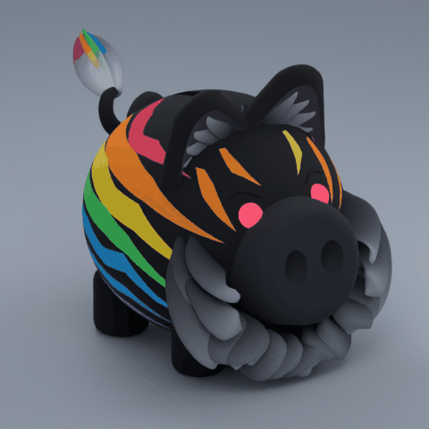
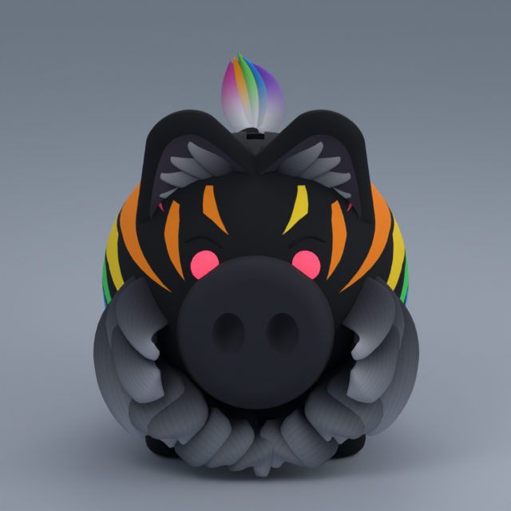
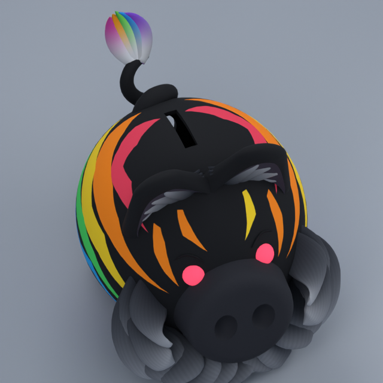

Legendary animalsRainbow Tiger
Approved option C build: black piggy, compact swept charcoal fur, softer brows and clean wraparound rainbow stripes. Actual model renders and a four-second idle/pulse preview. Studio integration pending.
Actual animation preview

Model views
Black coat and broad clean painted rainbow markings
Compact charcoal tufts, relaxed brows and RGB eyesIndividually shaped tapered flank stripes
No mohawk; original deposit opening retainedOriginal curled tail above the flush vault bore